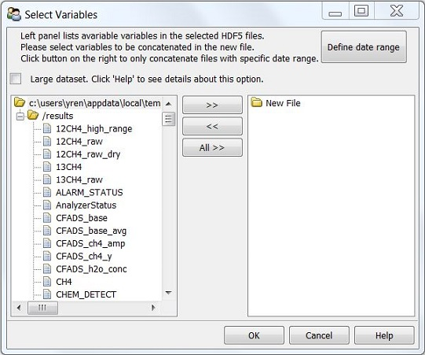

File Menu¶
Load Config¶
See Save configuration for details.
Concatenate ZIP/Folder to H5¶
After selecting zip/folder path, DatViewer will automatically search a H5 file in the zip/folder and look for all available variables in the H5 file. All these available variables are listed in the left panel, and users can use “>>” button to put variables to the right panel for concatenation.
Define date range¶

DatViewer can search data files within the desirable date range and then concatenate such files into a H5 file. By defaut, TimeZone is set to the local one. However, if data were taken elsewhere, select the timezone where data were taken.
If target folder is a Private Log with sub folders named with the creation date, check “PrivateLog” so DatViewer will only search folders within the desirable date range, which may substantially reduce processsing time.